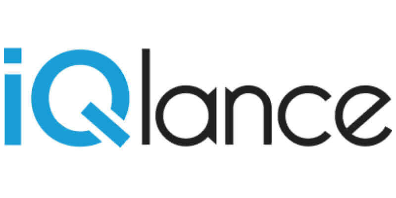
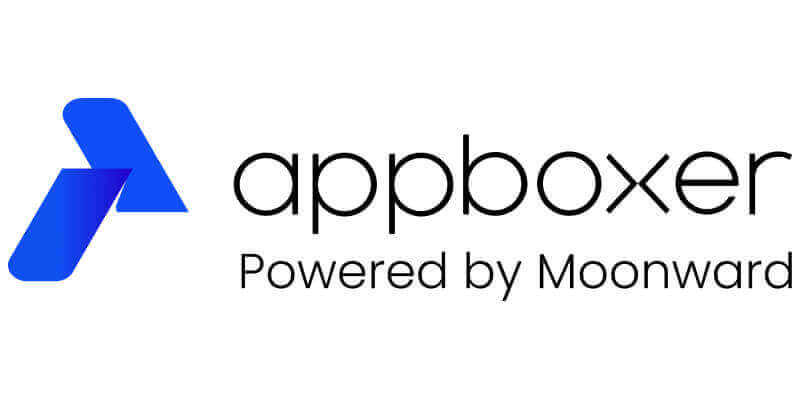
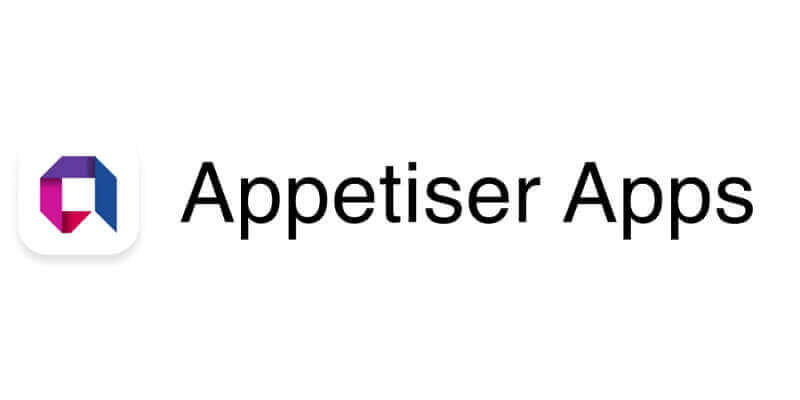
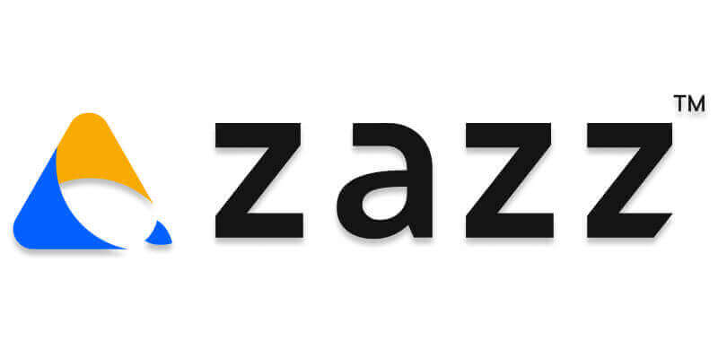
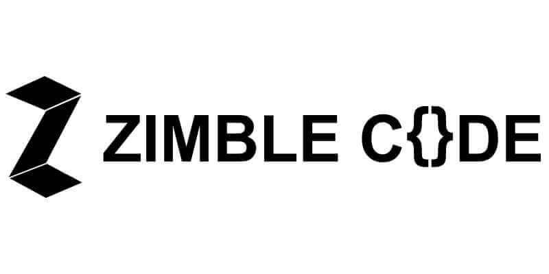

So, you’re a digital product founder looking to build the next big handheld sensation. However, you’re stuck because you don’t know which are the best mobile app development agencies in Australia to help you achieve that. If that’s you then this blog is the answer to your bubbling questions. After careful research I’ve put together a top 10 list of the best agencies for you to choose from and you can’t wrong with these picks. All the agencies I’ve listed on here are of high quality but only you would know what your requirements are when choosing the right agency for your project you should consider your priorities.
Not wasting any time lets jump right into what we came here to learn about.
When you’re building an app for a startup of yours the service provider giving you the development services matters a bunch. Our list of the best mobile app development agencies in Australia will highlight some great companies in Australia, what they really shine at when it comes to mobile app development and how they approach clients. I have to say that you can’t really make a mistake when choosing from this list because all of them are among the best mobile app development company associative.
However, there may be certain areas some of them excel at and some other areas you may want to go with another agency. Additionally, you have to look at the culture fit because it does matter what choice you make from these mobile app development agencies in Australia they have to align with your vision and how you do business. With that said let’s just get into our top 10 list.
What makes these agencies the top 10 mobile app development agencies in Australia is the commitment they give to their clients and the quality they provide.
1. Sparkout Tech Solutions Inc.

Sparkout Tech Solutions Inc is a name that you may have heard of and it provides end to end mobile app development services all across Australia. When it comes to the services Sparkout provides the list is broad and can offer you full cycle services no matter which industry you are in.
One of Sparkout’s major highlights is that it works with emerging technologies like AI/ML, blockchain and IoT to provide you with advanced mobile applications with future proof features. Additionally, as one of the leading mobile app development agencies in Australia Sparkout also provides services in web app development, custom software development, UI/UX designs, quality assurance services and technology consulting. Sparkout Tech is known for working very closely with its clients and providing them solutions that are both visually appealing and at the same time highly functional.
When it comes to the industries Sparkout Tech works on solutions for multiple industries like fintech, healthcare, travel, education and logistics. Sparkout also provides staff augmentation services where you can hire individual developers for your product teams with minimal training. As one of the top mobile app development agencies in Australia Sparkout also works using multiple project management models like Agile and Waterfall to make your development process seamless according to your requirements. It also works with multiple mobile app development frameworks if you have very specific needs in terms of technologies you want to use for your app.
Pros:
- Sparkout works with emerging technologies like AI/ML, blockchain and IoT if you’re building solutions using these technologies.
- Provides project management in multiple methodologies which includes agile for a flexible development process.
- Works with a large array of industries like fintech, healthcare, travel, education and logistics as one of the leading mobile app development agencies in Australia.
- High quality solutions provider with end to end services which includes mobile app development, web apps, custom software and much more.
Cons:
- Since Sparkout provides premium quality services the costs for development may be on the higher side depending on the size of your business and your budget.
- Complex projects like mobile apps that use emerging technologies like AI and blockchain may carry longer timelines.
Website: www.sparkouttech.com
2. Vrinsoft Au
Vrinsoft Au is a very well known mobile app development company with a smart and skilled team of app developers. They work with businesses of all sizes whether a startup, a small business or a large enterprise.
Additionally, as one of the top mobile app development agencies in Australia they are known for creating mobile apps that are feature rich and at the same time user friendly. Vrinsoft is also known for building solutions that use cutting edge technology while making sure that the solutions they build align with your business deeply. When you look at the industries they work with the list is also wide and includes eCommerce, real estate and much more. They are experts in building a wide range of solutions for your business like Android and iOS apps, cross platform apps and custom software solutions.
Pros:
- As one of the leading mobile app development agencies in Australia are highly experienced when it comes to native apps and cross platform apps.
- While their services are diverse they focus on tailoring each solution to the client’s business and goals.
- They also provide you with optimization for your apps using the latest technology stacks.
Cons:
- If you have a complex app idea with a lot of features the costs may be on the higher side.
- Since they have a very thorough approach for building products the timelines may be a bit on the longer side.
- Their focus on marketing and post launch promotions is limited even though they are among the top mobile app development agencies in Australia so if you want those services also you may want to consider other providers.
Website: www.vrinsoft.com.au
3. iqlance

iQlance is a leading mobile app development company which is known for providing very high quality services for their clients with a touch of innovation to their solutions. They have a keen focus on building great custom mobile apps and use a blend of creativity and technical experience to turn your ideas into reality.
One of the great things about iQlance is that they provide all round full cycle services which starts from the initial conception and user experience design of your apps to end to end product engineering and support services after launch. As one of the trusted mobile app development agencies in Australia they are service providers for various industries like eCommerce, education and entertainment.
Pros:
- They can provide end to end services for your mobile app projects which starts from app development to support after launch.
- They are highly skilled in using advanced technologies to achieve different app needs.
- They are known for providing you with solutions that are tailored to your business requirements.
Cons:
- Since they provide thorough testing for the applications they build the delivery timelines can be on the longer side.
- If you have an app that needs a lot of customizations and complexity the costs for development may be on the higher side being one of the leading mobile app development agencies in Australia.
- May not align with your needs if you have a very small scale project since they provide a specialized service.
Website: www.iqlance.com
4. App Boxer

The name App Boxer is very well known in Australia and their major focus is to turn your ideas into highly functional mobile apps. App Boxer is a company that’s known for being very innovative and they offer a very wide range of services which include mobile app development for iOS and Android phones, cross platform software products and specialized MVP development.
Additionally, they are also known for their focus on collaboration as one of the top mobile app development agencies in Australia where they work closely with you to refine your ideas and turn them into apps that are user centric and tailored to your business goals and brand image.
Pros:
- They have a great focus on being collaborative and involving their clients in the product development process.
- They have deep experience when it comes to apps that have user centric UX design and appealing visuals.
- If you’re expecting a flexible work process which is adaptable then they provide you with agile methodologies of project management.
Cons:
- They don’t focus much on marketing and promotion services for apps as they are one of the mobile app development agencies in Australia so you will have to use other service providers in the mobile app development company associative for this purpose.
- Since they provide a very high quality service their pricing may not be feasible for small businesses.
- Since they offer project management in the agile method you may need to be involved significantly in the development process.
Website: www.appboxer.com.au
5. Buzinga
Buzinga is one of the well established names in Australia and you may have heard of them if you’ve been in the tech space for some time. They are well known for creating applications that are very innovative and at the same time give a user friendly experience to customers as one of the major mobile app development agencies in Australia.
Their services are end to end and very elaborate which starts from strategy and user experience design to testing, development and post launch maintenance support. When you look at the industries they service it is also broad with the major sections they work in being healthcare, finance and education. Additionally, they work on projects using agile methodologies which means that your app’s development process will be flexible and tailored to your business.
Pros:
- They have a very elaborate full service offering which starts from strategy to post launch support.
- They are well known for creating robust and well rounded solutions as one of the top mobile app development agencies in Australia for multiple industries.
- If you’re looking for a company that can also provide you with consulting services with real market experience then Buzinga is a great option.
Cons:
- Since they provide an elaborate range of services their cost for development may be on the higher side.
- Since they provide a flexible work process using agile methodologies your project timelines could be on the longer side.
- Since their major focus is on mobile app development you may need to find another mobile app development company in Australia for marketing services.
Website: www.buzinga.com.au
6. Appetiser

Appetiser is another one among the leading mobile app development agencies in Australia and a name you may have heard about. As a service provider they are known for creating solutions that are unique and their work process is very collaborative.
This allows them to build customized digital products that are of high quality. They follow a client centric approach as a philosophy and work with their clients throughout the app development journey. This means that they will travel with you and your project from the idea creation stage to product launch and much beyond that. They don’t discriminate when it comes to the clients they work with as one of the leading mobile app development agencies in Australia and are known for working with businesses of all scales which includes small businesses, startups and large enterprises and corporations.
Pros:
- They provide a very elaborate app development service which includes the strategy stage to the launch stage.
- They also can help you use modern technologies to increase your app’s performance so if you need mobile app redesign services to boost your growth they may be the right fit for you.
- They provide a highly collaborative and transparent development process for building your mobile applications as one of the leading and trusted mobile app development agencies in Australia.
Cons:
- They provide a premium range of services which could mean that their costs for development may be on the higher side.
- If you’re trying to build an app for a complex idea with a lot of customizations your development timeline could be on the longer side.
- Since they work with large scale app projects their services may not align with your needs if you have a very simple app idea.
Website: www.appetiser.com.au
7. Zazz

Adding a little bit of Zazz to the mix they are a very innovative service provider and are well known for being one of the top mobile app development agencies in Australia. As a highly quality service provider for mobile apps Zazz is known for building top notch applications that use modern mobile app development frameworks and technologies like Swift, Kotlin and React Native.
One of their major highlights is that their approach is design centric and they make sure that the apps they build are both functional but at the time aesthetically captivating and user friendly. They have a very experienced and skilled team that consists of developers, designers and strategists.
Pros:
- Their major focus is on being innovative and design focused with apps that provide a great user experience as one the top mobile app development agencies in Australia.
- They have good expertise in using cutting edge technologies to build scalable apps that are high performance.
- Their service offerings are pretty wide with multiple digital solutions available which includes web apps and mobile apps.
Cons:
- Since they have a keen focus on user experience and advanced technologies their costs for development may be on the higher side.
- Again, since their development process is design centric the timeline may be extended.
- Their major focus is on the technology and innovations side of things as one of the top trusted mobile app development agencies in Australia which may limit their focus on marketing services.
Website: www.zazz.io
8. Zimble Code

Zimble Code like their unique name focuses simply on building innovative digital products which are at the same time scalable. Their expertise extends to multiple industries and if you look at their portfolio you can see solutions for healthcare, eCommerce and social networking.
One other thing to note about Zimble is that they have a good emphasis on tailoring solutions to suit your unique requirements as a business. Another thing to note about Zimble is that they emphasize on being user first when it comes to the design as one of the top mobile app development agencies in Australia. This makes sure that your app not only is innovative but at the same time provides your users with a great engaging experience.
Pros:
- One of their specialities is in building highly innovative apps which are at the same time scalable.
- Their services include development for native as well as cross platform apps.
- They focus highly on the user experience of your apps and have a user centric approach for design.
Cons:
- If you have a large scale project with a lot of customizations then their development costs could be on the higher side as one of the premium mobile app development agencies in Australia.
- If your idea is very elaborate and advanced then the development timelines could be on the longer side depending on the complexity of your project.
Website: zimblecode.com
9. DigiGround
What makes DigiGround special is that they are a multi award winning mobile app development company that provides a wide range of services for their clients. One of their major highlights is that they provide custom mobile apps for multiple industries and use cases like retail, healthcare and education.
They are also known for creating solutions that go beyond your expectations with a unique blend of great user experience and the power of latest technologies as one of the top tier mobile app development agencies in Australia. Their services cover multiple spheres from branding and user experience design to full scale development and digital marketing services.
Pros:
- They offer end to end services if you need everything from mobile app development to digital marketing services.
- They have a very strong portfolio of clients and a reputation as a multi award winning company.
- They can provide you with comprehensive post launch support and marketing services.
Cons:
- Since they provide premium services for their clients their costs may be on the higher side.
- They are one of the top mobile app development agencies in Australia and if you have a very complex idea for your app then the associated timelines may be on the longer side.
- If you’re a smaller business with a simple idea for an app then their services may be too large for your needs.
Website: digiground.com.au
10. Appgurus
Another agency with a suiting name AppGurus is a well known and leading mobile app development company with a strong team of app developers. They can give you everything from mobile and cross platform development to full scale custom software development services.
Additionally, as one of the well established mobile app development agencies in Australia they work on multiple tech stacks such as Flutter, React Native, Swift and Kotlin for end to end digital product engineering. Their approach to mobile app development is consultative which means that they will work closely with you to make your app ideas better and technically innovative.
Pros:
- They have a very consultative approach which means that they can help you refine your ideas and create a great mobile app.
- They are highly skilled and experienced in building both native apps and cross platform apps.
- They also provide you with post lunch maintenance as one of the leading mobile app development agencies in Australia and focuses greatly on app performance.
Cons:
- If your ideas require you to build fully customized and tailored solutions then the cost for development may be on the higher side.
- Since they are majorly focused on mobile app development their marketing services may be limited.
- If you have a very unique and elaborate idea for your app then the timelines may be on the higher side.
Website: www.appgurus.com.au
How to Choose the Right Mobile App Development Agency in Australia
Choosing the right mobile app development agency in Australia goes beyond checking portfolios and prices. It’s actually about finding the right partner who truly understands your market and long-term vision.
Industry Fit & Local Market Understanding
Pick an agency that understands the Australian user behaviour, compliance rules, and digital trends. Also, local insights help your application feel authentic and meet regional standards.
Ability to Build for Growth
Make sure to choose a team that thinks beyond the present. Companies that plan for future scaling, new features, and multi-platform expansion help your application stay competitive for many years.
Strength in Designing User Journeys
Check whether the company craft flows that match how Aussie users actually browse, shop, and interact. Region-aware UX decisions will make your app more intuitive and user-friendly.
Focus on Performance
Leading agencies will test applications on real devices across Australia’s major networks. This ensures a smooth speed, low crashes, and consistent performance in real-world conditions.
Transparent Collaboration
Work along with agencies that involve you in agile sprints, share progress updates, and justify decisions with data. This will build trust and keep the project aligned from day one.
That’s all for our list of top 10 mobile app development agencies in Australia
We have some great names on this list and they are by far the best mobile app development agencies in Australia. If you’re on the lookout for a service provider to build your apps then choosing any company from this list will not bite you. However, each agency has a focus on different things and their expertise is different. When choosing your technology partner make sure that you choose a company that aligns with your specific requirements.
If this blog post helped you then share it with a business owner or founder who might be able to use it.